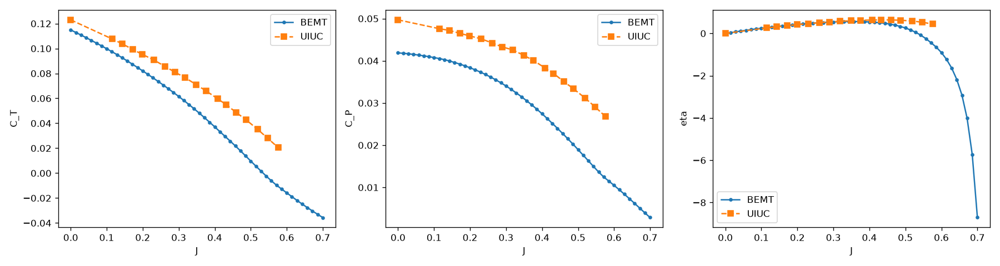

Small electric propellers lift eVTOL and drone airframes at low Reynolds numbers, where the blade sections stall early and behave nothing like full-scale rotors. Blade Element Momentum Theory predicts their performance in under a second, which makes it the workhorse for early sizing. A fast prediction is only worth its verification. This suite pairs a from-scratch BEMT engine with a formal verification pipeline that scores it against UIUC wind-tunnel data and an OpenFOAM 3D RANS field.
Small electric propellers operate at Reynolds numbers between 30,000 and 150,000, where laminar separation bubbles and early stall govern the airfoil sections. Full-scale rotor intuition does not transfer to this regime. BEMT stays the standard tool because it returns a full performance sweep in under a second, fast enough to sit inside a sizing loop. The cost of that speed is fidelity, so the prediction is worth nothing without a reference to bound its error.
Verification here follows a fixed structure. A physical experiment and a higher-fidelity simulation anchor the truth, and the lower-order model is scored against both. This project treats the UIUC Propeller Database and a full OpenFOAM RANS solve as that ground truth, and treats BEMT as the model under test. The whole suite was built to the NASA systems-engineering standard SP-2016-6105, with a requirements document, a decomposed architecture, and numbered acceptance gates.
Build the BEMT engine from scratch, trim it to a real operating point, and score it against experiment and CFD through gates that pass or fail on their own. The gates were fixed before the model was tuned, so a passing result had to be earned rather than fitted.
The suite splits into three subsystems that talk only through immutable data contracts, each exposing one entry point. The aerodynamic engine never sees a trim state, and the trim solver sees the engine as a black-box solve. This keeps the verification pipeline downstream of both, so it scores results without re-running the physics.
Solving directly for the induced velocity vi keeps the solver stable at J = 0 hover, where the classical factor form Va = V∞(1 + a) is singular. An early Glauert high-induction patch was removed once verification showed it fired spuriously in axial climb and broke thrust monotonicity. The exact velocity form needs no such patch. Performance is reported as CT = T / ρn²D⁴, CP = P / ρn³D⁵, and η = J·CT / CP.
Each metric is scored automatically against experiment or CFD. Three gates pass and three miss, and the three misses trace to one cause.
| Gate | Metric | Value | Threshold | Result |
|---|---|---|---|---|
| MET-01 | CT @ hover vs UIUC | 6.6% | ±5% | FAIL |
| MET-02 | CP (J ≤ 0.5) vs UIUC | 41.8% | ±7% | FAIL |
| MET-03 | η peak-J location | ΔJ 0.075 | ±0.03 | FAIL |
| MET-04 | Spanwise dT/dr trend vs CFD | r = 0.960 | ≥ 0.95 | PASS |
| MET-05 | Trim residual ∑Fz | 1.5×10⁻⁵ N | < 10⁻⁴ | PASS |
| MET-06 | 50-point sweep latency | 0.10 s | < 1.0 s | PASS |
Thrust and power coefficients and propulsive efficiency, swept over advance ratio J at fixed RPM. Hover thrust tracks the data closely. The power coefficient increasingly under-predicts as forward flight loads the low-Reynolds inboard sections.

One root cause, characterized rather than tuned away. BEMT under-predicts the power coefficient in axial climb by about 42% against both CFD and experiment, which is what sinks MET-02 and MET-03. It is not a polar-quality artifact. Extending the XFOIL table to Re 10,000, smoothing it, tuning ncrit, adjusting tip-loss, and adding a Du–Selig stall-delay model were each tested and ruled out as minor. The residual is the fundamental limit of a 2D-polar strip-theory method at these Reynolds numbers. The physics that does not hit that wall is clean. Hover thrust lands 1.6 points past a strict 5% gate, the spanwise loading shape correlates with 3D CFD at r = 0.96, and trim and latency pass with wide margin.
With the polar-quality avenues exhausted, closing MET-02/03 further is a modeling-philosophy choice, not a bug hunt.